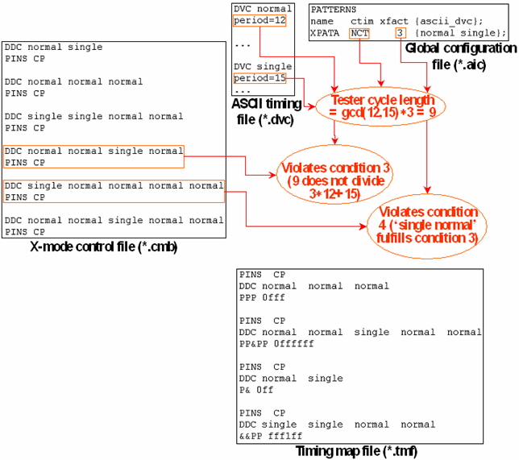

General Rules for Processing ASCII Device Cycle Combinations
For a given pattern, the timing translation takes an ASCII device cycle combination of the x-mode control file into account only if it satisfies the following conditions:
- All ASCII device cycles of the combination are associated with the pattern.
- All ASCII device cycles of the combination are connected to the same timing set.
- The total length of the combination (calculated by adding the ASCII periods of all its elements) equals (a multiple of) the test system cycle length specified in this timing set.
- No initial segment of the combination fulfills condition 3.
- The combination has at most 10 elements.
ASCII device cycles the period of which already equals a multiple of the test system cycle length are a special case. No combination including one of them is processed by the timing translation. In the timing map file, there is one 1:n entry for such ASCII device cycles.
The following figure illustrates conditions 3 and 4:

The two framed x-mode control file entries do not occur in the timing map file because they do not satisfy conditions 3 and 4, respectively.